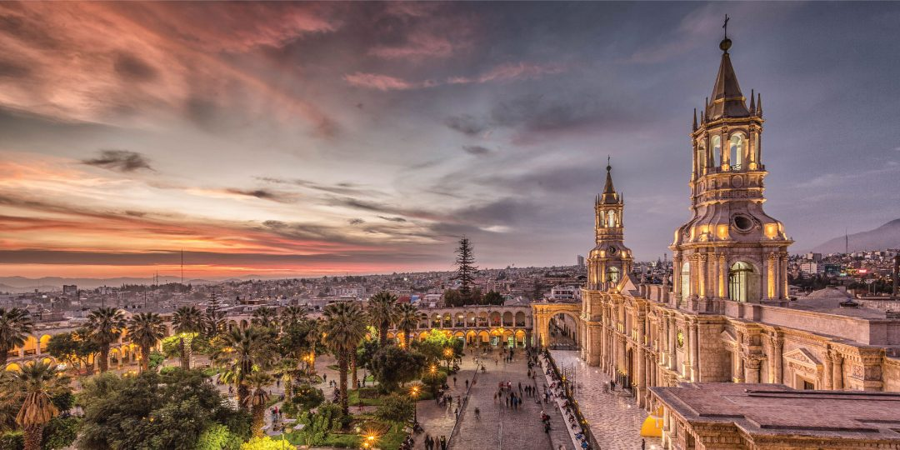

Bienvenidos a mi sitio web
Learning with EDteam
Algunos lugares turisticos de Perú
Ayacucho
Ayacucho es una ciudad ubicada en el centro del sur de Perú. Tiene numerosas iglesias coloniales, como el templo de Santo Domingo, que destaca por su campanario de tres arcos. La Plaza Mayor, también conocida como Plaza de Armas, alberga la catedral de Ayacucho, que data del siglo XVII y tiene retablos bañados en pan de oro. Ver mas
Arequipa

Arequipa es una ciudad peruana ubicada en la provincia y el departamento homónimos, es la sede del Tribunal Constitucional y la «Capital Jurídica del Perú». Es la segunda ciudad más poblada del Perú, después de Lima, albergando una población de 1 008 290 habitantes según los datos del Censo Nacional 2017.
Cuzco

Cuzco o Cusco es una ciudad del sureste del Perú ubicada en la vertiente oriental de la cordillera de los Andes, en la cuenca del río Huatanay, afluente del Vilcanota. Es la capital del departamento del Cuzco y, además, según está declarado en la constitución peruana, es la «capital histórica» del país.
Trujillo

Trujillo es una ciudad del noroeste de Perú conocida por la marinera (danza tradicional de la nación). En el centro colonial está la majestuosa catedral de Trujillo, cuya fachada es de color amarillo vivo, y la azulada Casa Urquiaga. Cerca de allí se halla el palacio neoclásico Iturregui, que tiene estatuas de mármol italiano y un patio. Al oeste de la ciudad se encuentra el enorme complejo de adobe de Chan Chan, una ciudad abandonada que en su día fue el hogar del antiguo reino chimú.